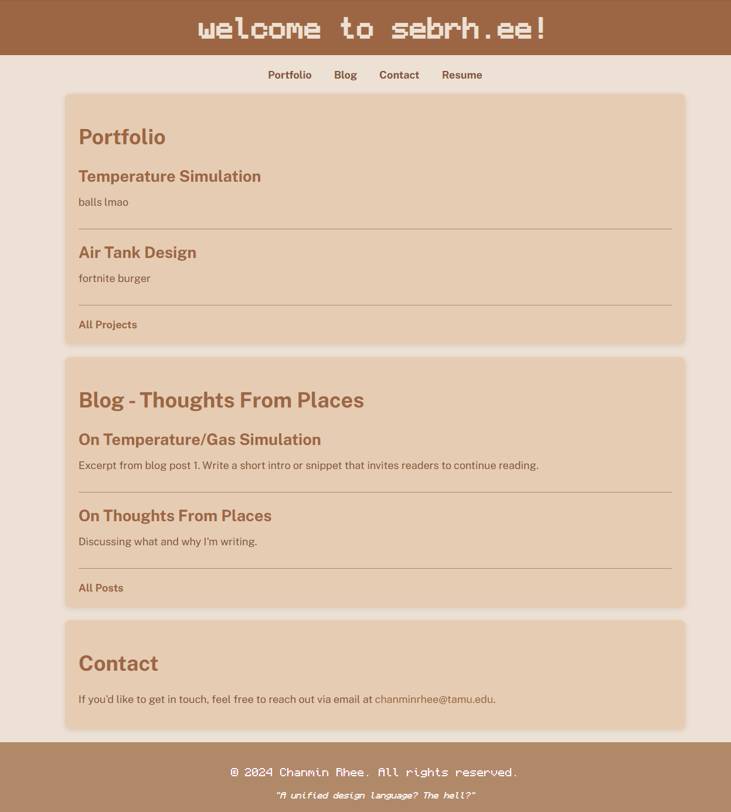

Recently, I’ve had the pleasure of trying to apply for internships/jobs/research labs(?) for the summer. Every application is truly a slog, and it’s made me do some soul-searching on the person that I actually am.
My resume, as of 9-16-24 is pretty pitiful. I’ve included jobs from high school. It’s got no extracurricular projects. I have no particular proficiencies that make me stand out from everyone else. So, I decided to actually sit down and make a portfolio-resume-personal page Thing that won’t completely embarrass me (though, by writing this, maybe I’ve already failed?).
My [lack of] HTML skills haven’t been improved since I picked it up in 9th grade. My CSS skills are entirely non-existent. So, like every other aspiring computer science student, I used AI to write it for me.
Honestly, this is probably one of the best use cases for AI. It strips away all of the difficulty of reading through pages and pages of documentation and StackOverflow questions and it gives you way more time to build the things you actually want. Not that it gave me what I wanted — the initial .html file it gave me had no colors, no external links, and was entirely in a generic serif font. But it wasn’t too far off. Just a little Minecraft font here, some coffee-themed colors there — I had built a lovely little foundation. All I needed was actual content to put on the site.
Actually, the blog and Thoughts From Places was entirely GPT’s idea. I only asked for a “personal website for me to put my portfolio”, and it automagically™ placed a section for me to put a blog. I thought it would be fun to track my progress as I built and broke Things along the way, so I started drafting the first article for Thoughts From Places.
There’s still a lot more to do, and maybe I’ll write more about it when that time comes. But for now, it’s time to actually start building my portfolio stuff.
Writing this post is actually me procrastinating from building the rest of the portfolio. hehe